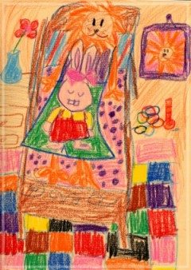

生命的圖像-庭煒的桃花源記 吳秋美老師
認識庭煒兩年了。兩年來反覆地進出醫院，進行艱辛的療程。她就在住院期間，最辛苦的情況下邀請我進入她的桃花源。
儘管身體的苦楚難以忍受，庭煒從來就沒放棄過，總是以積極樂觀的態度面對。時常會想起去年10月，好不容易才從病危的谷底爬起來的庭煒。即使痛到坐不起來，仍然堅持學習。出院回家過生日前，我給好學的她一張學習單。她竟然兩手一舉跳起來歡呼，那一聲『耶』代表再次戰勝病魔的驕傲，和對生命的渴望。這一幕和她忍痛讀著繪本時的笑聲，一直不停在腦子裡停格、播放。
盛夏前，有一天傍晚領軍和他們一家人到十分看螢火蟲。其實那一天真是不方便，媽媽在辦公室，妹妹在安親班，爸爸在家裡陪庭煒，更要緊的是那天庭煒血小板不夠，是要到醫院輸血的，血小板又遲遲未送達血庫，醫院隨時會來電話，進到深山裡，路途遙遠很怕耽誤輸血，而庭煒也只有在化療前一兩天比較有精神。雖然天不時，可也是最好的時機，我們還是決定上山。
誰知我是一個大路痴，兩個星期前才去的地方，這會兒竟認不得路了。繞了半天，打了數通電話，還是不得要領。蜿蜒漆黑的山路，沒有人家，沒有車子，花了好大的功夫，還是沒找到對的路。幽微孤單的路燈和庭煒的興致勃勃恰成對比，我心裡記掛著要輸血，庭煒卻一首歌接著一首歌愉快地唱。好不容易到了目的地， 庭煒一下車就過來拉我的手，我說：「你今天特別開心喲！」她只偎到身邊撒嬌地說：「因為有你呀！」晚間涼風徐徐，師生兩人牽手走這一段路，鼻子很酸很酸，心裡很甜很甜，感覺很滿很滿。庭煒總是真情流露，隨時在表達她的情感。
下山的路依舊前不著村後不著店，庭煒大喊肚子餓。喊著喊著竟又興奮大叫：「哇！我看到雞腿、我看到牛排、還看到鳳爪耶！」我們也這樣隨著雲朵變化聞著香味，想著美食，飽餐一頓。她是最懂得活在當下的快樂生活家，即使外界環境不能盡如人意，也不會妨礙她的愉悅心情。
已經11點了，他們還要趕到醫院輸血，我問「等一下輸血時，要怎麼處理睡著的妹妹」 媽媽只是淡淡地說：「我陪庭煒在急診室，爸爸在停車場陪妹妹。」他們時常要三更半夜跑急診，總是這樣度過。那夜他們堅持要先送我到家，這樣的情誼出自一個生活秩序變調的家庭。那天深刻體會到她們生活中的混戰，混戰中要維持其他成員的作息穩定，混戰中要把握時機創造生活美好時刻，混戰中要享受生活的片刻甘美，而這樣的混戰也讓庭煒從容優雅地學會樂觀和自信，庭煒互相扶持的家人深深地深深地令人動容。這段幽谷伴行的道路上，我和人間的至情至愛同行！
庭煒從小就展露繪畫的天賦。四歲時，一幅畫著看報的爸爸，誇大比例的父親與報紙，立體的構圖、色彩的大膽，令人驚艷！她畫畫室裡的瓶花、貓、雕像；她畫河堤散步時看見的吹笛少年；她畫穿新衣服的媽媽；她也為想像中的故事構圖；…。病榻前，她更畫下了對美麗世界的憧憬和期待，將疾病的晦暗彩繪成令人驚嘆的篇幅！這些圖畫時而以兒童童稚的線條述說充滿想像力的故事，時而跳躍出神幻的色彩描繪大自然的神奇…，然後又捕捉到溫暖的圖像溫柔地傳遞她對家人照顧的愛與感激…。
這學期庭煒的畫作在台北市十幾所學校巡迴展覽，只要是展覽過的學校都被庭煒的樂觀與不懈精神所感動，庭煒的堅毅勇氣在校園裡傳頌，師生們對庭煒致上真誠的感恩與關切的祝福，他們從庭煒身上學到要珍惜自己所擁有的幸福，他們從庭煒身上學到在逆境中把握短暫的片刻創造生命，他們從庭煒身上學到永不放棄，他們學到感恩和付出關心。庭煒將她的樂觀和堅持以獨特的彩筆在十幾所校園播下生命的種子、描繪愛的圖像，在成千成萬個學童、成百成千個家庭埋下一粒不死的麥子！ 這是她臨行前送給我們的禮物。
認識庭煒宛若進入一個生命桃花源，在桃花源裡見證生命的真情至愛、喜悅和勇氣，也見證了逆境裡的樂觀和創造。庭煒一路走來從容優雅，鏗鏘有聲！
|
 |
•獅子與兔子睡衣 在對折的卡片一面挖一個洞當窗戶，這次的題目很深奧：窗外看到的和實際上是不一樣。小庭煒沉思三秒鐘，在紙上畫了一隻瞇瞇眼兔子，接著又在兔子頭頂上畫了個太陽，正想像兔子在太陽下作日光浴的光景時，不到兩秒太陽裡多出了五官，馬上變身為一隻獅子；當愚蠢又固著的大人正擔心肉食的獅子和溫馴的兔子在紙上不知道要怎麼相處時，小天才在兔子身旁畫了兩條斜線，加上雙手雙腳，原來是獅子穿上有兔子花紋的衣裳，才要哈哈大笑時，被單和紋飾的床誕生了，哈！原來是獅子在床上睡覺，獅子眼睛斗大，反倒是睡衣上的兔子睡了起來，孩子的天真讓人莞爾！看她畫畫真是一種享受！就在品味這一切的同時，她完成了牆上的掛畫、桌上的瓶花、地毯的織錦，最後還不忘留了一個小玩具！這個房間看起來暨溫暖又安全，讓人很想窩在裡面，也為這場豐沛的歷程來個happy ending！這是90年6月—歷經第一次病危後的作品，難忘的場景，難忘的心情，難忘的一堂課！ |